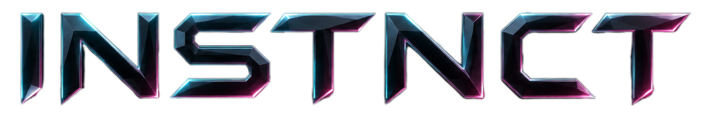

Not a wrapper around someone else's model.
The alpha-Sync substrate is positioned as native VRAXION infrastructure, not a hosted LLM shell with different branding.

Created and maintained by Daniel Kenessy / VRAXION
INSTNCT is VRAXION's first public SymGround demo surface: a microsecond-class reasoning core built on bounded symbolic grounding. No neural net. No phone-home. Pull the network and it still runs.
Position
Smarter means deeper internal structure and more curated skills, not a bigger probabilistic blob.
The alpha-Sync substrate is positioned as native VRAXION infrastructure, not a hosted LLM shell with different branding.
The public claim is narrow and testable: exact recall refuses when it cannot stay inside approved transformations.
The page keeps the proof burden concrete: offline behavior, latency, footprint, and repeatable local runs.
Flagship capability
The useful distinction is simple: exact recall emits only approved transformations; imagination composes beyond seen patterns inside a bounded drift budget.
When the requested pattern is outside approved grounding, the engine should stop instead of making a plausible-looking guess.
Trust protocol
The GLM build's strongest move was making proof visible. This static version keeps that: footprint, local run, encrypted binary, and measured selector path.
Training-dependent, CPU/RAM oriented, and aimed at hardware people actually own.
Remote dependency cannot hide inside a microsecond local timing claim if the machine is offline.
The method stays protected while behavior remains inspectable through local runs and repeatable checks.
Fabric
High-level only. The page explains the shape without pretending to publish the core grounding method.
Grounded. Traceable. Bounded. No weights. No probabilities. A fabric that reasons instead of guessing.
Roadmap
Direction, not promises. The order matters: prove locally first, then expand.
Stabilize the T1 binary. Ship the smallest honest version. Listen, fix, repeat.
Curated, inspectable packs that extend capability without bloating the core.
Opt-in global consensus matrix. No personal data. Paid or opt-out.
Founder note
VRAXION is the project identity named by Daniel Kenessy. Public notes show direction and discipline, not a promise of release, scale, or final capability.
Built with AI coding tools, but not presented as magic. The site keeps the boundary visible.
Ship the smallest honest version, learn from real runs, and earn the next step.
Questions
The static page keeps the claims testable and avoids pretending the protected method is public.
The public position is explicit: no neural network, no probabilistic model core, no hosted LLM wrapper. The proof burden is in local behavior, latency, and refusal semantics.
Run the binary, disconnect the network, repeat the same checks, and compare timing. Remote inference cannot hide cleanly in a 5 us selector claim.
The grounding method is the protected asset. The current trade is encrypted binary plus inspectable behavior.
T1 is framed as a bounded baseline, not an all-knowing system. The first useful version should be small, local, and honest about limits.
Training in progress
The first signal path stays direct and human-reviewed while T1 is still being shaped. Send a short note if you want early access context, benchmark notes, or release updates.